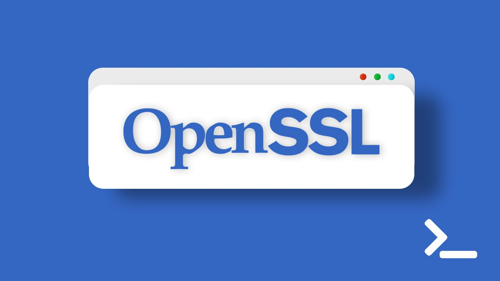
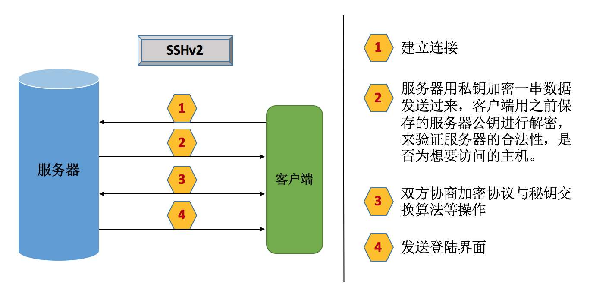

纸上得来终觉浅，绝知此事要躬行。
SSL(Secure Sockets Layer 安全套接字协议)，及其继任者传输层安全(Transport Layer Security，TLS)是为网络通信提供安全及数据完整性的一种安全协议。TLS 与 SSL 在传输层与应用层之间对网络连接进行加密。

1. SSH 协议
ssh是secure shell的首字母缩写，默认工作在TCP的22端口之上，安全的远程登录的一种协议。
OpenSSH就是ssh协议的开源实现，用于取代传统的不加密工作在TCP的23号端口上的telnet工具的，同时取代了其他远程复制等工具的实现。dropbear是ssh协议的另一个开源实现，适用于较小的网络中。
SSH 协议版本
v1版本:- 基于
CRC-32做MAC很不安全，很容易受中间人攻击(man-in-middle)
- 基于
v2版本：- 双方主机协议选择安全的
MAC方式 - 基于
DH算法做密钥交换，基于RSA或DSA算法实现身份认证
- 双方主机协议选择安全的
两种认证机制
- 基于用户名和密码
- 连接之后客户端发送用户名和密码进行登录
- 基于公私钥的
免密码登录- 客户端生成一对公私钥，将公钥放到远程服务器家目录的
.ssh目录文件下。当客户端连接服务器的时候，服务器发送一串用公钥加密的数据让客户端解密，如果成功则身份通过认证。此处的公钥不能够公开，否则不安全。
- 客户端生成一对公私钥，将公钥放到远程服务器家目录的
dropbear
ssh协议的另一个实现的开源方式- 用在嵌入式系统上
- 资源占用率更少
# 创建Key，使用2048或者默认长度
[root@localhost ~]# dropbearkey -t rsa -f /etc/dropbear/dropbear_rsa_host_key -s 2048
[root@localhost ~]# dropbearkey -t dss -f /etc/dropbear/dropbear_dss_host_key
# 启动dropbear的ssh服务
[root@localhost ~]# dropbear -p [ip:]port -F -E
[root@localhost ~]# dropbear -p :2222 # 后台运行
[root@localhost ~]# dropbear -p :2222 -F -E # 前台运行
# 客户端访问，可以用系统的ssh，也可以用dropbear的客户端dbclient
[root@localhost ~]# ssh -p 2222 root@127.0.0.1
[root@localhost ~]# dbclient -p 2222 root@127.0.0.12. OpenSSH
2.1 OpenSSH 基础
OpenSSH也是一个基于C/S架构的用具，同时还能够实现很多如ssh、scp、sftp等的功能。客户端工具众多，如商业的xshell以及securecrt，开源的putty，服务器端的多为Linux下的sshd。
客户端组件
ssh- 配置文件：
/etc/ssh/ssh_config
服务器端组件
sshd- 配置文件：
/etc/ssh/sshd_config
连接过程

2.2 SSH 命令的基本使用
格式
ssh [user@]host [COMMAND]ssh [-l user] host [COMMAND]
选项
-p port- 远程服务器监听的端口
- 因为很多服务器因为安全的关系导致不会使用默认的
22号端口号
-X- 支持
x11转发 - 支持之后就是可以打开远程主机的图形化界面程序，如
xclock程序 - 同时本地系统也需要启动
x11才可以打开图形化界面程序
- 支持
-Y- 支持信任的
x11转发 - 支持之后就是可以打开远程主机的图形化界面程序，如
xclock程序 - 同时本地系统也需要启动
x11才可以打开图形化界面程序
- 支持信任的
实例展示
# 使用@登录远程主机
[root@localhost ~]# ssh root@172.16.242.181
# 使用-l登录远程主机
[root@localhost ~]# ssh -l root 172.16.242.181
# 不登录远程主机，只是执行一条命令
[root@localhost ~]# ssh root@172.16.242.181 'hostname'# 一次完整的SSH的用户名、密码登录
# 会在家目录下生成一个.ssh的隐藏文件夹，其中有一个known_hosts用来保存我们连接过的主机以及认证秘钥
[root@localhost ~]# ssh root@172.16.242.181
The authenticity of host '172.16.242.181 (172.16.242.181)' can't be established.
RSA key fingerprint is 2a:83:14:68:16:84:e0:0c:4a:2a:81:cd:9f:ae:ce:0a.
Are you sure you want to continue connecting (yes/no)? yes
Warning: Permanently added '172.16.242.181' (RSA) to the list of known hosts.
root@172.16.242.181's password:
Last login: Fri Jun 24 15:10:14 2016 from 172.16.242.1
[root@localhost ~]# cat .ssh/known_hosts
172.16.242.181 ssh-rsa AAAAB3NzaC1yc2EAAAABIwAAAQEArpD/NWo1g0xtUfEQH1vkG2aHYenkTJpiNGj1e/1rY3kQQpocL75EVIROVNSlqtbUiUkoy7fsxs0lfm+maDoGbMeuUQQBV/HSeBGuq3Jjfh+7ymR8iiSNNZLmqQmBpfG7/QG0WU1gXWeO1V3CJNjlbWQr/Px6zilypSeYaM+rS8SkekOzZpWgFDSUg3dFBmN5HhY3+fyWWvJlk1aJRxJW5T4dnecz+LLNnwWu6s880HBUY+f0ahdknGq8yKz0eeaTTUqf5qhSALiU0L3+ApocSINaZcuB+1X1IE+NRqpaJRBrXuwFjTQ99pBoPkRbdSGTkW0j5eC7U8bfzSydrmlCDQ==2.3 基于密钥的认证方式
格式
- (1) 在客户端生成密钥对
ssh-keygen -t rsa [-P ''] [-f "~/.ssh/id_rsa"]-P：指明使用公私钥的密码-f：指明秘钥文件路径，这里需要写明为绝对路径
- (2) 把公钥传输至远程服务器对应用户的家目录
ssh-copy-id [-i [identity_file]] [user@]machine-i：指明需要传给服务器的本地公钥文件位置- 默认会在服务端的
.ssh目录下生成一个authorized_keys的文件用来放置客户端的公钥信息的 - 如果没有就创建并将客户端的公钥信息放在这里，也可以达到同样的效果，需要注意
authorized_keys的权限为600，切记
- (3) 测试
ssh root@172.16.242.181
实例展示
# id_rsa为私钥，id_rsa.pub为公钥
[root@localhost ~]# ssh-keygen -t rsa
Generating public/private rsa key pair.
Enter file in which to save the key (/root/.ssh/id_rsa):
Enter passphrase (empty for no passphrase):
Enter same passphrase again:
Your identification has been saved in /root/.ssh/id_rsa.
Your public key has been saved in /root/.ssh/id_rsa.pub.
The key fingerprint is:
f3:4c:0d:41:78:e5:50:a6:00:c6:bf:1d:ad:3f:0f:bd root@localhost.localdomain
The key's randomart image is:
+--[ RSA 2048]----+
| .o..o+o+ |
| .. ...* |
| . .o.. |
| . .o. |
| So.o. |
| .=o . |
| o.. . |
| o. . |
| oE |
+-----------------+
[root@localhost ~]# cd .ssh/
[root@localhost .ssh]# ls
id_rsa id_rsa.pub known_hosts# 同时，也可以使用选项生成公私钥对
[root@localhost .ssh]# ssh-keygen -t rsa -P '' -f '/root/.ssh/'
Generating public/private rsa key pair.
/root/.ssh/ already exists.
Overwrite (y/n)? y
open /root/.ssh/ failed: Is a directory.
Saving the key failed: /root/.ssh/.# 把公钥传输至远程服务器对应用户的家目录
# 输入用户名以及密码即可完成
[root@localhost .ssh]# ssh-copy-id -i .ssh/id_rsa.pub root@172.16.242.1002.4 scp 命令的基本使用
格式
scp [options] SRC... DEST/
两种情形
PULL（服务器==>客户端，下载）scp [options] [user@]host:/PATH/FROM/SOMEFILE /PATH/TO/SOMEWHERE/PATH/FROM/SOMEFILE表示服务器端需要下载的文件/PATH/TO/SOMEWHERE表示下载到本地的那个目录下
PUSH（服务器<==客户端，上传）scp [options] /PATH/FROM/SOMEFILE [user@]host:/PATH/TO/SOMEWHERE/PATH/FROM/SOMEFILE表示本地上传文件/PATH/TO/SOMEWHERE表示服务器端的文件目录
常用选项
-r- 递归复制
- 复制目录的时候必须使用
-p- 保持原文件的属性信息
-q- 静默模式
-P PORT- 指明远端服务器的监听的端口
sftp命令
sftp命令依赖于ssh工作的，所以是加密的，并且能够简化我们的上传和下载操作
[root@localhost ~]# sftp root@172.16.242.181
Connected to 172.16.242.181.
sftp> help
Available commands:
bye Quit sftp
...实例展示
# 下载
[root@localhost ~]# scp root@172.16.242.100:/etc/fstab /tmp/fstab.txt
fstab 100% 779 0.8KB/s 00:00
# 上传
[root@localhost ~]# scp /etc/fstab root@172.16.242.181:/tmp/fstab2.5 rsync 命令的基本使用
基于 ssh 实现高效率的远程系统之间复制文件，使用安全的 shell 连接做为传输方式，比 scp 更快。
选项
-n：模拟复制过程-v：显示详细过程-r：递归复制目录树-p：保留权限-t：保留时间戳-g：保留组信息-o：保留所有者信息-l：将软链接文件本身进行复制（默认）-L：将软链接文件指向的文件复制-a：存档，相当于–rlptgoD，但不保留 ACL 和 SELinux 属性
实例演示
# 复制目录和目录下文件
rsync –av /etc server1:/tmp
# 只复制目录下文件
rsync –av /etc/ server1:/tmp3. SSH 服务的最佳实践
- （1）不要使用默认端口
- （2）禁止使用
protocol version 1 - （3）限制可登录用户
- （4）设定空闲会话超时时长
- （5）利用防火墙设置
ssh访问策略 - （6）仅监听特定的
IP地址 - （7）基于口令认证时，使用强密码策略
tr -dc A-Za-z0-9_ < /dev/urandom | head -c 30 | xargs
- （8）使用基于密钥的认证
- （9）禁止使用空密码
- （10）禁止
root用户直接登录 - （11）限制
ssh的访问频度和并发在线数 - （12）做好日志，经常分析
- （13）如果在测试的时候不成功，注意关闭
selinux和iptables
4. SSH 服务的配置文件
4.1 客户器端配置文件
- 注释的都为启用默认配置
Host表示指定的主机，*表示全部主机MACs表示消息摘要码Port表示如果服务器端口改变之后不用每次都指定端口号Protocol表示启动的 ssh 协议版本StrictHostKeyChecking表示当连接新主机会提示信息
[root@localhost ~]# cat /etc/ssh/ssh_config
...
Host *
- GSSAPIAuthentication yes
- ForwardX11Trusted yes
- SendEnv LANG LC_CTYPE LC_NUMERIC LC_TIME LC_COLLATE LC_MONETARY LC_MESSAGES
- SendEnv LC_PAPER LC_NAME LC_ADDRESS LC_TELEPHONE LC_MEASUREMENT
- SendEnv LC_IDENTIFICATION LC_ALL LANGUAGE
- SendEnv XMODIFIERS4.2 服务器端配置文件
#开头的表示注释- 配置的时候不能携带多余的字符
Port表示监听端口，通常需要改动ListenAddress表示监听的地址，因为一个机器可能有多个地址，通常监听内网地址而不监听外网地址AddressFamily表示使用IPv4还是IPv6，any表示全部都监听AllowGroups表示可以访问的用户组AllowUsers username表示可以访问的用户名，username表示具体的用户名HostKey表示主机秘钥支持的算法KeyRegenerationInterval表示主机秘钥过期时间ServerKeyBits表示主机秘钥长度SyslogFacility表示日志存储方式，保存在/var/log/secure内LoginGraceTime表示连接登录等待时间PermitRootLogin表示是否允许root用户直接登录PasswordAuthentication表示是否允许基于口令认证，即用户名和密码登录X11Forwarding表示是否允许X11转发，支持之后就是可以打开远程主机的图形化界面程序Subsystem sftp表示启动子系统sftp，所以才能使用sftp命令UseDNS表示解析DNS，建议关闭否则可以出现客户端登录用时长的问题
5. telnet 命令的基本使用
telnet 是基于 S/C 架构的工具，服务器端 telnet-server，客户端为 telnet，用到的时候需要自己独立安装。
# 服务端安装telnet程序
[root@localhost ~]# yum install -y telnet-server
已安装:
telnet-server.x86_64 1:0.17-48.el6
作为依赖被安装:
xinetd.x86_64 2:2.3.14-40.el6
完毕！# 服务端启动telnet，因为telnet是工作的超级守护进程中的瞬时守护进程，所以启动方式不同
[root@localhost ~]# chkconfig telnet on
[root@localhost ~]# service xinetd restart
Stopping xinetd: [FAILED]
Starting xinetd: [ OK ]
[root@localhost ~]# ss -tunl | grep :23
tcp LISTEN 0 64 :::23 :::*# 在CentOS6中，xinetd为超级守护进程，telnet是运行在xinetd之内的
# 超级守护进程xinetd就是为了那些可能长时间不需要使用的服务监听，一旦有需求才启动对应的服务进行通信。
# 瞬时守护进程就是为了那些可能长时间不需要使用，如果单独分一个进程跑太浪费性能了，所以使用超级守护进程xinetd进行统一管理
# 独立守护进程就是那些自己管理自己的程序，sshd就是一个独立守护进程
[root@localhost ~]# chkconfig --list
...
xinetd - 0:关闭 - 1:关闭 - 2:关闭 - 3:启用 - 4:启用 - 5:启用 - 6:关闭
基于 xinetd 的服务：
- rsync: - 关闭
- telnet: - 启用
- time-dgram: - 关闭
- time-stream: - 关闭
...# 确保在客户端安装了telnet的客户端程序，并且确保服务端iptables中没有过滤23号端口的请求
# telnet不允许root用户直接登录，需要使用普通用户登录
[root@localhost ~]# yum install -y telnet
[root@localhost ~]# telnet 172.16.242.181
Trying 172.16.242.181...
Connected to 172.16.242.181.
Escape character is '^]'.
CentOS release 6.7 (Final)
Kernel 2.6.32-573.26.1.el6.x86_64 on an x86_64
login: